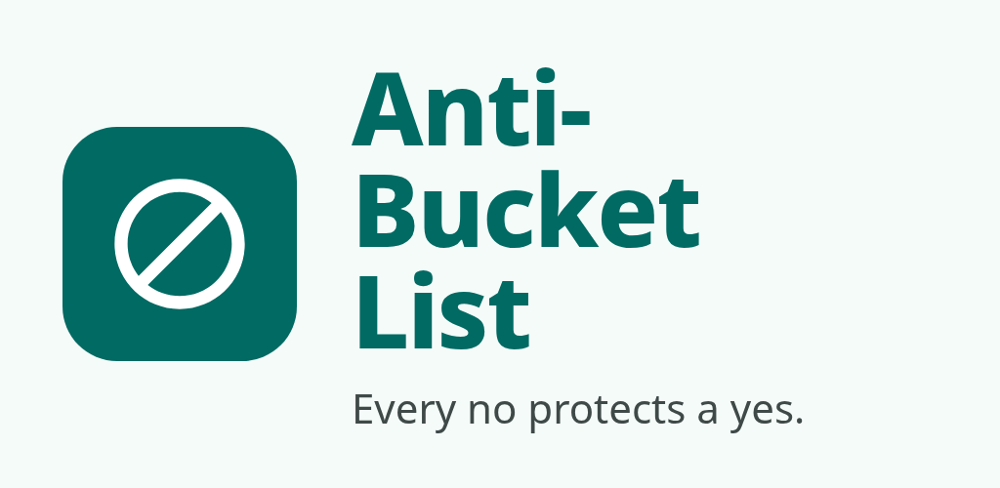
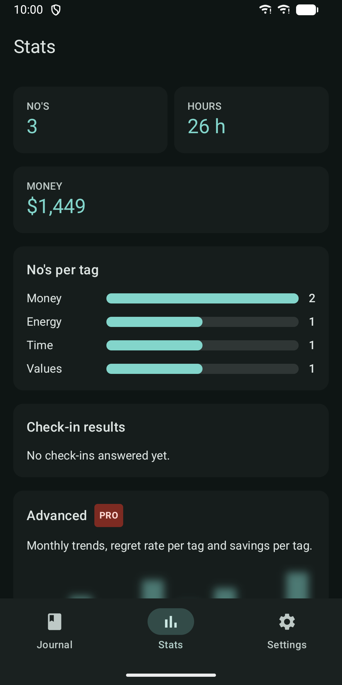
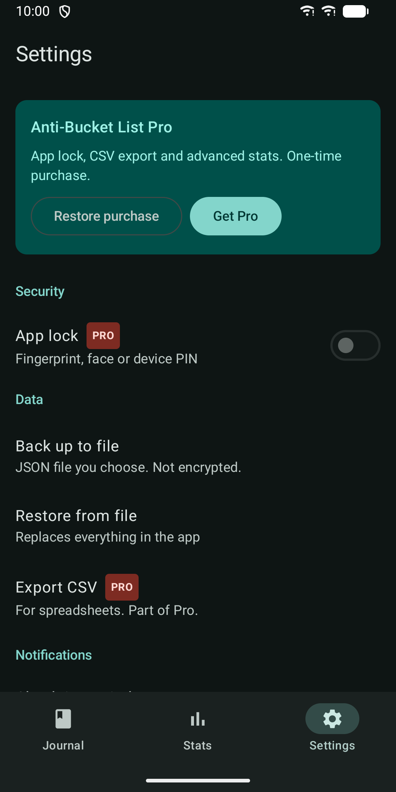

Anti-Bucket List: Diario
Anota a qué dijiste que no y comprueba después si te alegras de ello.






Acerca de la app
Cada «no» protege un «sí». Anti-Bucket List es un diario privado para tus rechazos deliberados: la invitación que declinaste, la mejora que te saltaste, el proyecto extra que no aceptaste. Anota a qué dijiste que no y por qué, y vuelve más tarde para ver si todavía te alegras de haberlo hecho. APUNTA EN SEGUNDOS - A qué dijiste que no y por qué, con tus propias palabras - Etiquetas de motivo: Tiempo, Dinero, Energía, Valores y Límites, además de las tuyas - Cómo te sentó decir que no, en una escala de aliviado a inquieto - La fecha en que lo decidiste - Dinero y horas ahorrados, si quieres REVISIONES «¿SIGUES CONTENTO?» A los 30 y a los 90 días, un recordatorio te pregunta cómo lo ves ahora: me alegro, no estoy seguro o me arrepiento. Puedes añadir una nota breve. Con el tiempo descubres qué tipo de «no» te sienta bien. Si las notificaciones están desactivadas, las revisiones pendientes también aparecen arriba en tu diario. TU DIARIO - Busca en los títulos y motivos que escribiste - Filtra por etiqueta - Filtra por resultado de la revisión: pendiente, vencida, me alegro, no estoy seguro o me arrepiento - Abre cualquier entrada para ver el motivo completo y el historial de revisiones ESTADÍSTICAS - Total de noes, dinero ahorrado y horas ahorradas - Noes por etiqueta - Los resultados de tus revisiones: me alegro, no estoy seguro y me arrepiento WIDGET PARA LA PANTALLA DE INICIO Consulta los noes de este mes y lo que has ahorrado, y crea una entrada nueva con un solo toque. COPIA DE SEGURIDAD Y RESTAURACIÓN Guarda tu diario en un archivo JSON en el lugar que elijas y restáuralo cuando quieras. El archivo no está cifrado, y la app te avisa antes de cada copia. PRIVADA POR DISEÑO - Sin cuenta ni registro - Sin analíticas ni publicidad - La app no tiene permiso de internet. Tu diario se queda en tu teléfono. - Excluida de la copia de seguridad en la nube de Android y de la transferencia entre dispositivos FUNCIONES PRO Todo lo descrito arriba funciona sin ninguna compra y sin límites. Pro es una compra única opcional a través de Google Play, no una suscripción. Añade: - Bloqueo de la app con huella, rostro o PIN del dispositivo. También oculta las cifras del widget y el texto de las notificaciones. - Estadísticas avanzadas: noes por mes de los últimos 12 meses, tasa de arrepentimiento por etiqueta, y dinero y horas ahorrados por etiqueta - Exportación a CSV para hojas de cálculo Pensada para quienes trabajan sus límites, el minimalismo o su forma de decidir, y para quien quiere constancia de que decir que no fue lo correcto. Funciona en móviles y tablets, en modo claro y oscuro, y es compatible con lectores de pantalla.